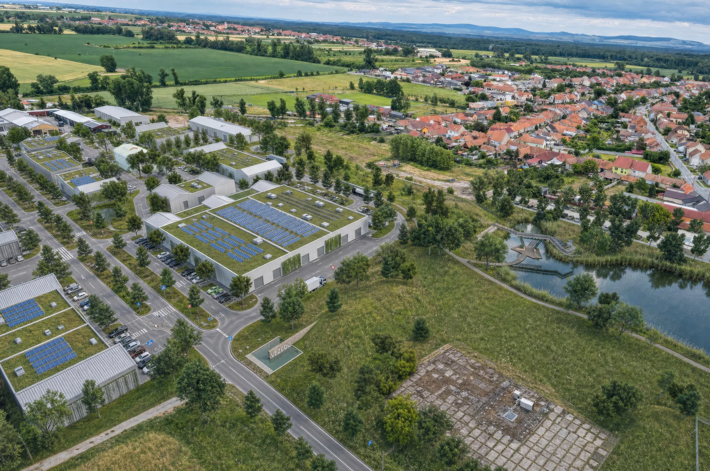

Obec vkládá
- Pozemky, většinou ve vlastnictví obce
- Územní plán pro lehkou výrobu
- Zkolaudované komunikace a sítě
- Architektonickou studii a konstrukční řešení šesti hal
- Koncepci společné správy areálu (YEZEDO Services)

Investiční příležitost · Kostice u D2
Obec Kostice jako developer připravuje soběstačnou a ekologickou zónu u dálnice D2. Území, sítě i studie šesti hal jsou hotové. Hledáme strategického investora, se kterým projekt společně doladíme a postavíme.
01 Nabídka pro investora
Obec udělala práci, která u podobných projektů trvá nejdéle. Hledá investora, který s ní areál postaví. Konkrétní podobu spolupráce dohodneme na jednání.
Doplní obecForma: vlastnictví hal, právo stavby na pozemcích obce, nebo podíl ve společné firmě. Z čeho plyne výnos: nájem, prodej hal firmám, podíl na výnosu.
Poptávka už je
Ještě se nestaví, a obec už má první firmy, které chtějí v halách sídlit. Investor tak od začátku ví, že prostory mají odbyt. Podrobnosti o zájemcích probereme na prvním jednání.
Doplní obecKdo bude haly pronajímat a kdo bude provozovat YEZEDO Services.
02 Investice a čas
Komunikace, kanalizace, vodovod, osvětlení a rozvody NN zkolaudovány, s podporou programu MPO Smart Parks for the Future.
Atelier Dohnalovi, konstrukční řešení RIVESTA Consult.
Předpokládané vydání pro sýpku a prvních šest hal.
První etapa: sýpka a haly SO03–SO09.
Firmy, které chtějí v halách sídlit, se obci ozývají už teď. Investor nezačíná s prázdnými halami.
Doplní obecKdy mohou být haly v provozu.
03 Podoba projektu
Haly jsou modulární, v měřítku původního družstva. Vnitřní prostor lze dělit na sekce, součástí může být kancelářské patro i showroom. Konstrukční systém i dispozici lze přizpůsobit charakteru provozu.
Projekt doladíme společně. Obec má hotovou studii, ale investora bere jako partnera. O konečné podobě projektu, například velikosti hal, etapách nebo využití, se s ním chce domluvit.

Klikněte na halu, otevře se její detail v nové záložce.
Návrhová situace: Zásady rozvoje Smartzóny YEZEDO Kostice, 07/2026.
| Hala | Rozměry | Plocha | Sekce | Detail |
|---|---|---|---|---|
| SO03 | 54 × 24 m | 1 296 m² | 5 | Detail ↗ |
| SO04 | 66 × 24 m | 1 584 m² | 5 | Detail ↗ |
| SO05 | 36 × 18 m | 648 m² | 3 | Detail ↗ |
| SO06 | 68 × 66 m | 4 488 m² | podle záměru | Detail ↗ |
| SO07 | 66 × 18 m | 1 188 m² | 2 | Detail ↗ |
| SO09 | 54 × 18 m | 972 m² | 5 | Detail ↗ |


04 Přidaná hodnota
Yezedo je navržené jako areál, který si většinu toho, co potřebuje, zajistí sám: energii z místních zdrojů, vodu z vlastních srážek a materiál z původních staveb. Místo nového záboru pole vrací život bývalému družstvu.
Napojení na komunitní energetickou síť KES Kostice. Prověřuje se fotovoltaika, akumulace, kogenerace i využití odpadního tepla.
Veškerá dešťová voda se má využít přímo v areálu, bez odtoku mimo území. Park s vodou a zeleň ochlazují okolí hal.
Cihly, trámy a technické prvky původního JZD se znovu použijí. Areál vzniká na brownfieldu, ne na poli.
IoT monitoring má ověřovat úspory v reálném provozu. Digitální velín obce bude v sýpce BIQ.

Jediná původní stavba JZD dostane nový život: dílny, kavárna, coworking, digitální velín obce a multifunkční sál. Areál žije i po pracovní době.
YEZEDO Services zajistí péči o zeleň, komunikace, parkoviště a společné prostory. Firmy se podílejí přehledným měsíčním servisním poplatkem, odděleným od nájmu a energií.
YEZEDO Services ↗05 Poloha
Kostice leží na Podluží u Břeclavi, mezi Brnem, Vídní a Bratislavou. Areál je v zastavěném území obce, v územním plánu vedený jako plochy lehké výroby.
Dojezdové časy podle mapy Atelieru Dohnalovi. Na mapě je vyznačený i budoucí obchvat Břeclavi.

06 Jistota a postup
Obec pod vedením starosty Mgr. Libora Balgy vzala budoucnost bývalého zemědělského areálu do vlastních rukou. Architektonickou koncepci garantuje Atelier Dohnalovi.
Kdo jste, jaké projekty máte za sebou a co vás na Yezedu zaujalo.
Prohlídka na místě, studie, dokumentace a stav infrastruktury.
Podoba investice, role obce a investora, další postup.


Starosta Kostic a Atelier Dohnalovi o tom, co pro ně Yezedo znamená.
07 Kontakt
Napište nám pár řádků o sobě a o tom, jak si spolupráci představujete. Ozveme se a domluvíme první jednání, případně prohlídku areálu.
Libor Balgastarosta obce Kostice
 Brožura YEZEDOCelý projekt v jednom PDF · 3,3 MB
↓
Brožura YEZEDOCelý projekt v jednom PDF · 3,3 MB
↓